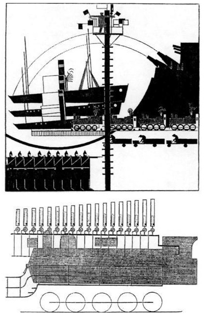
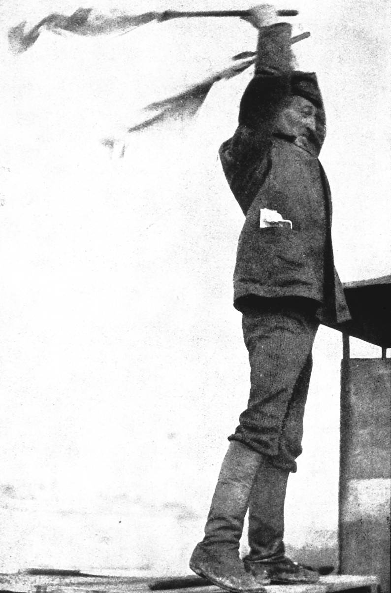

The End of an Era
The Empty Ones can guarantee a day when the last Zone-Herero will die, a final zero to a collective history fully lived. It has appeal.1
The Empty Ones
of Gravity’s Rainbow hark back to Eliot and Rivers’s Melanesians, dying out principally for the reason that the
.2 Civilization
forced upon them has deprived them of all interest in lifeOtukungurua
or emptied vessels, these Herero Revolutionaries of the Zero
have opted for racial suicide via a negative birth rate: there was a tribal mind at work here, and it had chosen to commit suicide.
3
Gravity’s Rainbow, of course, is governed by a similar law of disappearance to The Waste Land—a law that is most obvious in the dissolution of its main character, Slothrop, whose fragments are eventually scattered across the Zone.4 But what I’m interested in here is the connection between this logic of disappearance—mass-disappearance, in the case of the Empty Ones—and the Rocket. The Zone Hereros who seek a final zero to a collective history
, are also seeking the mysterious S-Gerät, the rocket with a serial number of five zeros. Whatever the status of the S-Gerät, in the context of Pynchon’s overarching leitmotif of the Zero—which, in ballistics, where the rocket’s trajectory is represented as Δ t approaching zero
, stands for the final field of annihilation, ground zero,5—it is clear that their eventual mass-extinction is tied up with the logic of total dehumanised annihilation that would come to dominate the military-industrial world of the Rocket.
In much of my foregoing discussion, the First World War has been present in the background. It brought the crowd to the fore because what was seen to be required for victory was mass-mobilisation. It was partly because of the war’s influence, and the interest in how populations behave in wartime, that two of the major works of British crowd-science that I’ve mentioned, Trotter’s Instincts of the Herd in Peace and War and Conway’s The Crowd in Peace and War came to be published and widely discussed.6
The outcome of the Second World War, though, would make crowds irrelevant. In the immediate aftermath of Hiroshima, and in the light of the testing of the first successful hydrogen bomb in 1952, it was apparent that you just didn’t need to bring huge crowds of soldiers with fixed bayonets face to face any more:7 the new atomic weapons could be delivered initially by a few men in a b-29, and then, as rocket technology developed, by a small team of experts in a silo on another continent. The bomb made crowds vanish, metaphorically by alleviating the need for massive standing armies, and literally as a weapon of mass destruction. In the U.S., the House Committee on Postwar Military Policy had concluded in 1945 that,
if an army was necessary…it would be better to recruit a small volunteer force, and better still if the country used its defence dollars to raise a professional army of scientists, rather than conscripts, and to fund a comprehensive program of research and development in the technology of modern war.8
In this light, the Zone Herero’s attachment to the 00000-series rocket bomb as a final zero to a collective history fully lived
has obvious appeal. The rocket stands for absence of people, just as Lewis’s war-crowd had stood as a poignant symbol of their contingent plenitude.
After the end of Le Bon’s era of crowds
, then, where do we go? In the remainder of this section, I intend to examine one final brief example of dying crowd art; I shall end by speculating on where, in the 21st century, crowd art may be heading.
the latest muscovite menace
—baku, transcaucasian republic, 1922
On 7 November, 1922—that is to say, three weeks after The Waste Land had been published in London; a month after the death of Marie Lloyd; a fortnight before Eliot’s last London Letter
appeared—the city of Baku, 4000 miles from London, witnessed one of the more remarkable works of avant-garde Crowd-Art. Baku, at that time, was emerging from a period of turbulence, riven by an ethnically-charged power-struggle. Workers in the cities, mainly Armenian and Russian, had established a revolutionary Baku Soviet in 1917; this had been overthrown a year later by a nationalist Army of Islam
, aided by Ottoman Turkish forces; the Muslim-dominated Azerbaijan People’s Democratic Republic had in turn ended with occupation by the Bolsheviks, hungry for the Caspian oil supplies.9
By 1922, the use of mass spectacles to celebrate the anniversary of the October revolution had already been well established—performances which both commemorated the historic intervention of the masses on the world stage, and allowed for the development of the new forms of cultural practice that left-wing artists imagined would be expressed through the person of the crowd. Lunacharsky, the Commissar of Enlightenment and founder of Proletkult had written that in order to experience themselves, the masses must manifest themselves externally, and this is possible only when…they themselves are their own spectacle.
10
A collective of directors including Nikolay Evreinov had, in 1920, produced an ambitious spectacle of mass theatre
entitled The Storming of the Winter Palace to commemorate the third anniversary of that event. The event was scripted (extremely unanimously and enthusiastically
) by a collective author
of ten writers. The stage consisted of two stages—one red (occupied by the workers), the other white (the provisional government)—and the Winter Palace itself. The actors consisted of eight thousand participants who were, Evreinov told them, parts of a collective actor
. And by Lunacharsky’s measure, the hundred-thousand spectators must also be counted as significant participants.11
The performance in Baku in November 1922, organised to celebrate the fifth anniversary of the Revolution, was more musical than dramatic. Arseny Avraamov is often cited as a precursor of the musique concrete movement; he would later produce pioneering electronic music by drawing directly onto magnetic tape, and had already begun the microtonal experiments that would culminate in the creation of his ultrachromatic
48-tone system.12

From strategically placed signal towers, Avraamov and his fellow conductors used flags and pistol shots to conduct an orchestra that encompassed much of the surrounding city; indeed, the combined military-industrial force of the region:
several choruses with spectators, cannons, foghorns, the Caspian flotilla, two batteries of artillery guns, several full infantry regiments incl. machine gun division, hydro-aeroplanes, all of Baku’s factory sirens…central steam whistle machine.13
This central steam whistle machine
or magistral’ was a device of Avraamov’s own design, a bank of tuned whistles powered by a central steam source, somewhat after the fashion of an organ (plate 10). Again, the performance was about collective action, and the masses becoming aware of themselves as spectacle. The industrial-scale renditions of The Warsaw Song, The International, and The Marseillaise could, apparently, be heard across a considerable stretch of Azerbaijan.14

Through a widely-read study of Russian revolutionary art, Geist und Gesicht des Bolschewismus (1926) by the Austrian René Fülöp-Miller,15 Avraamov’s performance became known—though not accepted particularly sympathetically—in the West. Fülöp-Miller described the performance’s noise orchestras
, composed of a crowd of motors, turbines, sirens, hooters, and similar instruments of din; the choir master stood on the balustrade and
16 Fülöp-Miller reproduced an image of Avraamov on the conducted
the din with the aid of a complicated signalling apparatus.balustrade
, conducting the din
with his complicated signalling apparatus
(plate 11).
So it was that this image came into the hands of T. S. Eliot in 1927. He described it in a commentary-piece for the Criterion, entitled, The Latest Muscovite Menace
:
Readers of an interesting German book, entitled Geist und Gesicht des Bolschevismus (which is about to be published in English), will remember the photograph of a proletarian conductor, with a couple of railway flags, directing some
community singingfrom the top of a factory.17
I like Eliot’s tone here: as we shall see, there is a certain amount of intentional humour at work, as Eliot exercises what David Chinitz has called his Mr Eliot
persona (the mask, based on a number of conventional character types
ranging from the fogey to the eccentric English gent, that according to Chinitz allowed Eliot to develop into an international superstar
);18 there is also a certain amount of unintentional humour attributable to the chinese whispers effect
that I discussed in the introduction, whereby, as an idea crosses international borders, it carries a meaning quite other than the one that was intended.
Of late,
Eliot continued, whenever any very large number of Britons is assembled in one place for holiday enjoyment, as for a Cup Final or Test Match, we find that a large part of the excitement consists in their all singing together.
19 What Eliot says is quite true. At that year’s cup final, the Times correspondent had been extremely impressed with the display, that most remarkable of modern phenomena, Community Singing
. He was especially impressed by the strange spectacle of a white figure, plump but athletic, vigorously waving his arms about, on a movable, black painted platform
:
The whiteness of the figure and the blackness of the platform somehow suggested a scaffold and an execution, but the morbid thought soon dissipated when the strains of the
Froth BlowersAnthem’ began to rend the air, and it was realised that this platform was the perch of a super-conductor, gymnastically as well as musically trained…. Mr. T. P. Ratcliff, in fact, was a former physical training instructor, and it was his knowledge of the well swung arm, not too easily tired, quite as much as his sense of beat and time, that lured on the crowd to unheard-of vocal triumphs. The echo of the Stadium, perhaps, helped the singers and their conductor to extract ayahout of the word Hallelujah that would have been terrifying in an enclosed space….Tipperaryand other war songs, of course, we all sang equally well—thanks to Mr. Ratcliff’s hypnotic arms.20
Whatever may be said for such public, collaborative, social arts, Eliot was not the one to say it. His reaction to this phenomena is wholly miserable; depressed, even:
We have not witnessed such a musical sacrifice, and do not know whether it is as yet merely a newspaper wheeze, or whether it has really taken hold of the British Massenmensch. If it has really caught on, we should like our social philosophers to tell us what it means…. We cannot explain it. But it should at present be suspect; it is likely very hostile to Art; and it may mark, and be a means of hastening the disappearance of the English Individualist whom we have heard so much about in the past, and his transformation into the microscopic cheese-mite of the great cheese of the future.21
Two essays by Eliot, commentaries in The Criterion separated by only four and a half years. They both deal with communal singing, yet they’re poles apart; two seemingly opposite views of mass participation.
In the first, In Memoriam: Marie Lloyd
, Eliot proposed that the working man who went to the music-hall and saw Marie Lloyd and joined in the chorus was himself performing part of the act; he was engaged in that collaboration of the audience with the artist which is necessary in all art and most obviously in dramatic art.
[Whereas] other comedians amuse their audiences as much and sometimes more than Marie Lloyd, no other comedian succeeded so well in giving expression to the life of that audience, in raising it to a kind of art. It was, I think, this capacity for expressing the soul of the people that made Marie Lloyd unique, and that made her audiences even when they joined in the chorus, not so much hilarious as happy.22
In the second, on the other hand, communal singing is seen as The Latest Muscovite Menace
. At around the time Eliot published The Waste Land, the communal chorus had seemed to provide the model (albeit a model which had passed its critical moment, its finest practitioner dead) for a kind of performance which could raise the life of community to some kind of harmonious aesthetic totality. The crowd, now, could provide little sustenance.
the wisdom of crowds: a new crowd millennium?
Le Bon’s era of crowds
, then, I had thought, was one and the same as Lewis’s age that had not come off
, a future that has not materialised
23—an era which nevertheless existed in the promise of the texts I’ve been looking at; texts which, we have seen, came into the world curtailed, or which, upon publication, carried only the faint trace of their origins as crowd texts.
Then, just as I was finishing my preliminary studies for this thesis, I began to hear about crowds in the media. For a start, there was the British artist Jeremy Deller. He had received a certain amount of attention in 2001 for his Battle of Orgreave: a partial re-enactment of the violent clashes between police and pickets during the 1984–85 miners’ strike.24 Deller’s performance looked back to early Soviet mass spectacles like The Storming of the Winter Palace: police and miners who had participated in the original Battle of Orgreave
were invited to take part, much as Evreinov had sought to attract as far as possible, actual participants in the October storming
.25
The message, however, was different—whereas Evreinov’s spectacle in 1920 had been dedicated to the crowd’s victory, Deller’s memorialised one of the terminal defeats of modern British working-class politics. The book and film which document the performance are filled with interviewees’ bitterness at the failure of collective action during the strike: one participant interviewed for the film voices his angry disagreement with the chant, the miners united will never be defeated
: it should have been
.26the workers united
So, I thought, crowd art may not be entirely dead, but that doesn’t effect my theses about the death of the crowd. While the artist can still put on a mass-spectacle, a piece of crowd art, they no longer claim that they are making revolutionary art, drawing on the same reservoir of collective force that will revolutionise the world. Rather, Deller’s piece revels in its own contradictions, and it’s these contradictions that make it interesting: drawing on the trauma of a failed revolt against Thatcherism that didn’t do any good, what good can this performance do; what does it possibly change?
Well, within a few years Deller had received the Turner Prize,27 Britain’s highest-profile award for contemporary art—not that this quite answers my question; however, it does seem to suggest that there’s an appetite for the questions posed by collective art practices. It didn’t end there. In 2003, there were reports of a new phenomena in New York known as Flash Mobs
; a mysterious figure known only as Bill
was using e-mail and text-messaging services to orchestrate large, inexplicable crowds that dissolved as quickly as they formed. On Tuesday, 19 June, 2003, at 7:27pm, a crowd spontaneously gathered in Macy’s in Manhattan: they were, they told staff, looking for a love rug
. Ten minutes later the crowd dispersed.28
Then, in 2004, James Surowiecki published a book called The Wisdom of Crowds.29 Subtitled why the many are smarter than the few and how collective wisdom shapes business, economies, societies, and nations
, Surowiecki’s book is interesting because, firstly, it effects a complete about-turn from the ideas of Le Bon and the nineteenth-century crowd theorists. Secondly, it is interesting because it puts these ideas across in a manner that seems completely of it’s era, in the same way that Le Bon was of his era: it has received a large amount of media coverage; it dwelt on subjects (like the Wikipedia) that are currently (1995) receiving a large amount of media coverage; it has caught the imagination of the twenty-first century business, self-help, management-guru market.
Perhaps the era that we are about to enter may, just possibly, become a new era of crowds.
Thomas Pynchon, Gravity’s Rainbow (London: Vintage, 1995; originally published 1973), p. 318.↩
T. S. Eliot, Selected Letters (London: Faber and Faber, 1999), p. 459.↩
Pynchon, Gravity’s Rainbow, pp. 316–317↩
Pynchon, Gravity’s Rainbow, p. 742; for a discussion of Slothrop’s dispersal, see Joseph Dewey, In a Dark Time: The Apocalyptic Temper in the American Novel of the Nuclear Age (West Lafayette: Purdue University Press, 1990), p. 166. For suggestive similarities between Gravity’s Rainbow and The Waste Land, see Andrew E. Mathis, The King Arthur Myth in Modern American Literature (Jefferson: McFarland, 2002), p. 131.↩
Pynchon, Gravity’s Rainbow, p. 159. The leitmotif is introduced in the novel’s first section,
Beyond the Zero
: see for example, Pynchon, Gravity’s Rainbow, p. 3 (to try to bring events to Absolute Zero
); p. 28 (in infinite series just perceptibly, term by term, dying…but never quite to the zero….
[Pynchon’s ellipses]); p. 426 (Steel fragments fell, a hundred feet away from the Zero point, slashing into the rye like hail
), etc.↩Wilfred Trotter, Instincts of the Herd in Peace and War (London: T. F. Unwin, 1916); Martin Conway, The Crowd in Peace and War (London: Longmans, Green and Co., 1915).↩
Joseph Smith, The Cold War, second edition, Historical Association Studies (Oxford: Blackwells, 1998). 40.↩
Michael J. Hogan, A Cross of Iron: Harry S. Truman and the Origins of the National Security State, 1945-1954 (Cambridge: Cambridge University Press, 2000), p. 132.↩
See James P Nichol, Diplomacy in the Former Soviet Republics (Westport: Praeger-Greenwood, 1995), p. 147; Sherri Liberman, A Historical Atlas of Azerbaijan (New York: Rosen, 2004), pp. 45–46.↩
Quoted in Frederick C. Corney, Telling October: Memory and the Making of the Bolshevik Revolution (Ithaca: Cornell University Press, 2004), p. 77.↩
Corney, Telling October, pp. 76–80. The quotes are from p. 77.↩
Marina Lobanova,
Avraamov, Arseny Mikhaylovich
, Grove Music Online, ed. L. Macy (accessed 4 August, 2005), < http://www.grovemusic.com > .↩Text of instructions quoted in Marina Lobanova,
Avraamov, Arseny Mikhaylovich
, Grove Music Online;↩Flora Dennis and Jonathan Powell,
Futurism
, Grove Music Online, ed. L. Macy (accessed 4 August, 2005), < http://www.grovemusic.com > .↩René Fülöp-Miller, The Mind and Face of Bolshevism: An examination of cultural life in Soviet Russia, trans. F. S. Flint and D. F. Tait (London: G. P. Putnam’s Sons, 1927). For an example of the book’s popularity in Italy, see Jeffrey T. Schnapp,
Between Fascism and Democracy: Gaetano Ciocca—Builder, Inventor, Farmer, Engineer
, Modernism/Modernity 2:3 (1995), p. 124.↩Fülöp-Miller, The Mind and Face of Bolshevism, p. .↩
T. S. Eliot,
A Commentary: The Latest Muscovite Menace
, Criterion 5 (1927), pp. 285–286.↩David E. Chinitz, T. S. Eliot and the Cultural Divide (Chicago: University of Chicago Press, 2003), pp. 175-179. The quotes are from p. 177.↩
T. S. Eliot,
A Commentary: The Latest Muscovite Menace
, Criterion 5 (1927), pp. 285–286.↩The Times, 25 April 1927, p. 6.↩
T. S. Eliot,
A Commentary: The Latest Muscovite Menace
, Criterion 5 (1927), pp. 285–286.↩T. S. Eliot,
In Memoriam: Marie Lloyd
, Criterion 1 (1923), p. 194, p. 193.↩Gustave Le Bon, Psychologie des foules, trans. (unaccredited) as The Crowd: A study of the popular mind (1896; reprint, Atlanta: Cherokee, 1982), xiv–xv; Wyndham Lewis, Blasting and Bombardiering (London: John Calder; New York: Riverrun Press, 1982) p. 256.↩
See Jeremy Deller, The English Civil War Part II: Personal Accounts of the 1984–85 Miners’ Strike (London: Artangel, 2002).↩
Corney, Telling October, p. 76.↩
The re-enactment was filmed by Mike Figgis as The Battle of Orgreave, Artangel Media and Channel 4, 2001. The book I refer to is Jeremy Deller, The English Civil War Part II.↩
Maev Kennedy,
Turner prize shock: out of four serious competitors, the best artist wins
, The Guardian, 7 December, 2004, p. 1.↩Alec Hanley Bemis,
, L. A. Weekly (6–12 August, 2004; accessed 9 September, 2004), < http://www.laweekly.com/ink/04/37/features-bemis.php > ↩My Name Is Bill . . .
: A q&a with the anonymous founder of flash mobsJames Surowiecki, The Wisdom of Crowds: Why the many are smarter than the few and how collective wisdom shapes business, economies, societies, and nations (New York and London: Doubleday, 2004).↩